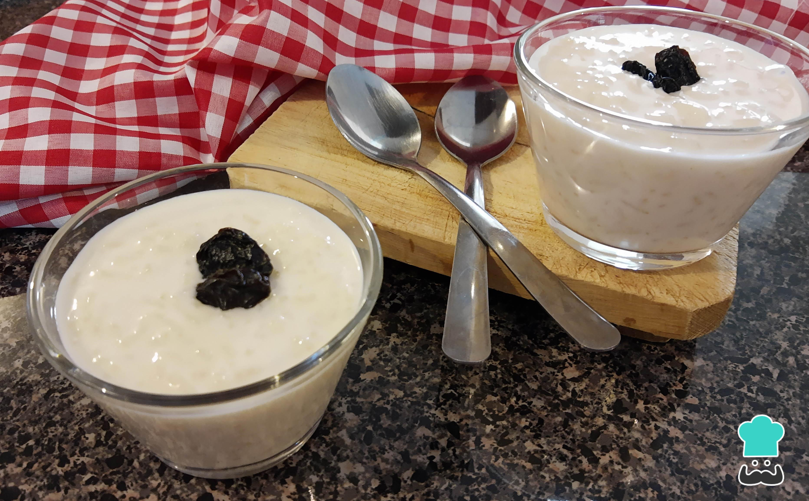

Arroz con leche
Mi receta es arroz con leche y la escoji porque me gusta

Ingredientes
- 200 gr de arroz redondo (y si es el arroz bomba de Calasparra, mucho mejor).
- 1 litro de leche.
- 100 gr de azúcar.
- 2 ramas de canela.
- La cáscara de un limón.
- Para decorar puedes utilizar canela en polvo o 4-5 cucharaditas de azúcar moreno (o blanco) para
caramelizar su superficie (opcional).
Pasos
- 200 gr de arroz redondo (y si es el arroz bomba de calasparra, mucho mejor).
- 1 litro de leche
- 100 gr de azucar
- 2 ramas de canela
- la cascara de un limon
- Para decorar puedes utilizar canela en polvo o 4-5 cucharaditas de azúcar moreno (o blanco) para
caramelizar su superficie (opcional).
“Esta receta fue copiada de la pagina ¡Que Viva La Cocina!”